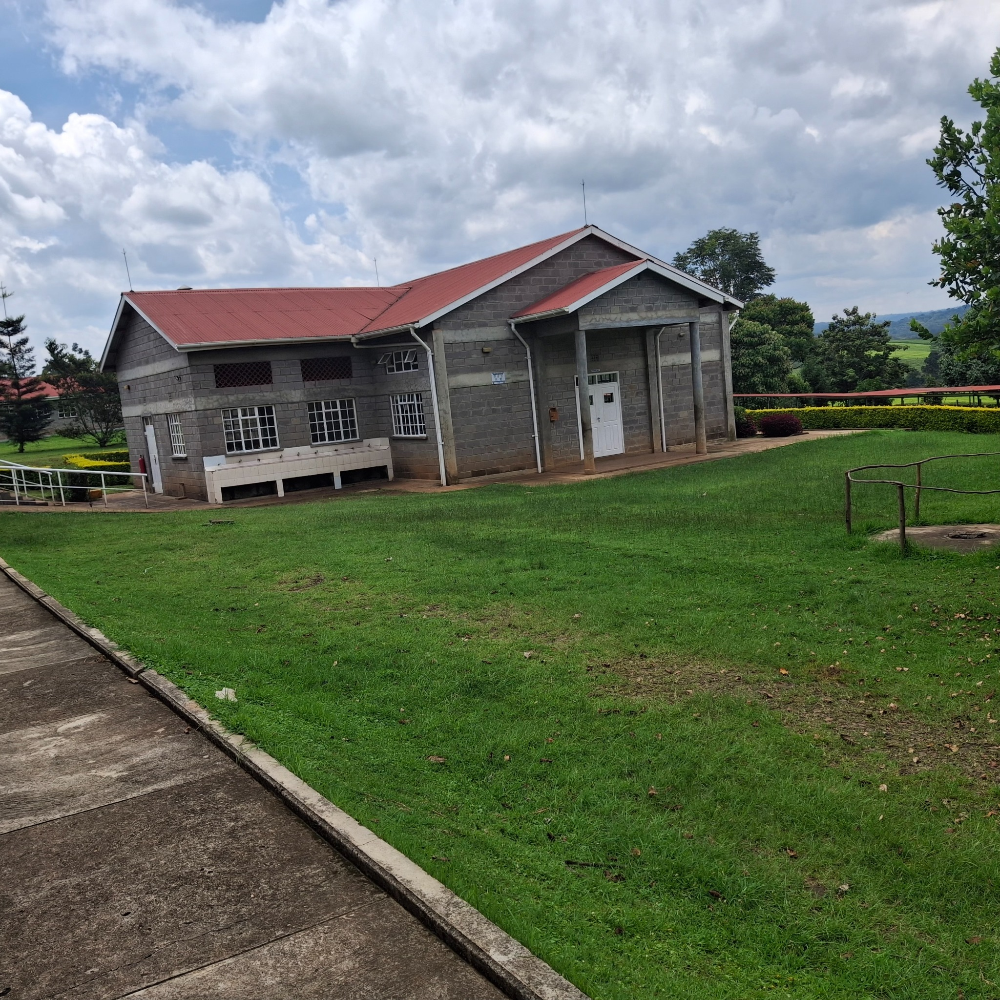
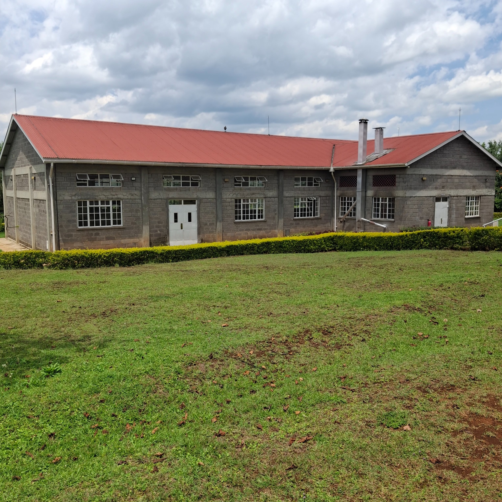
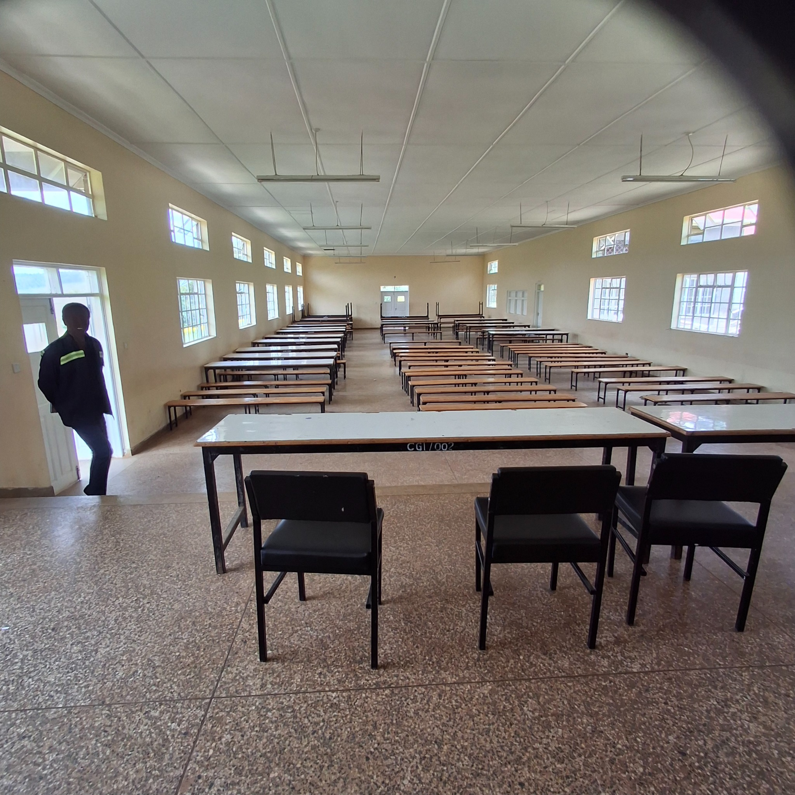
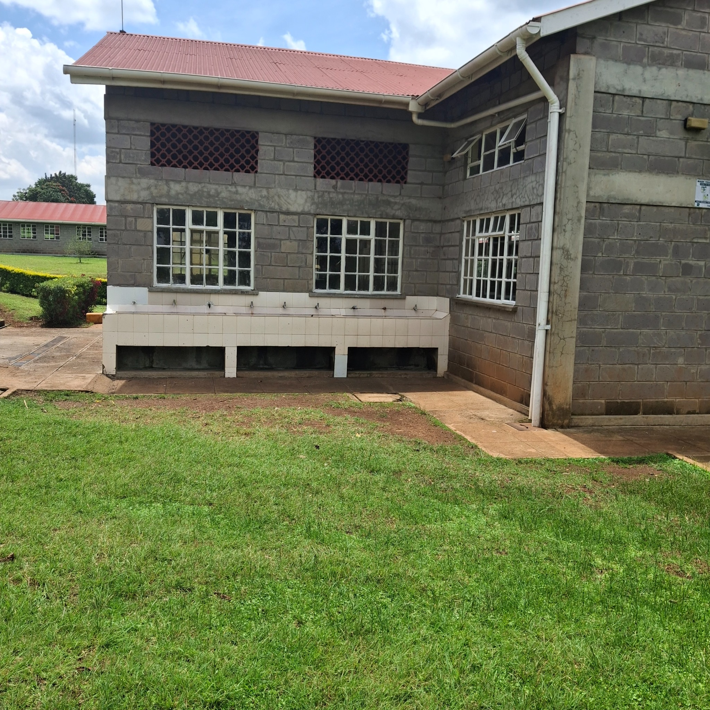
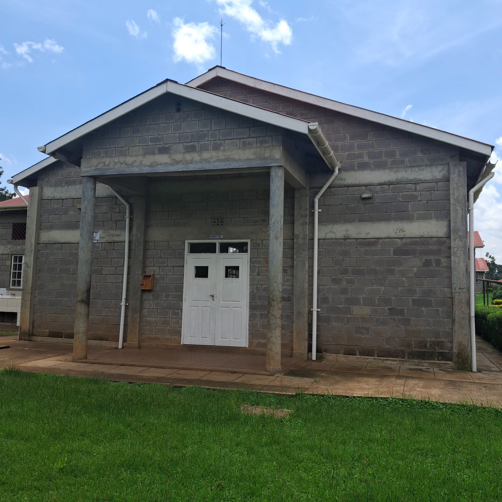
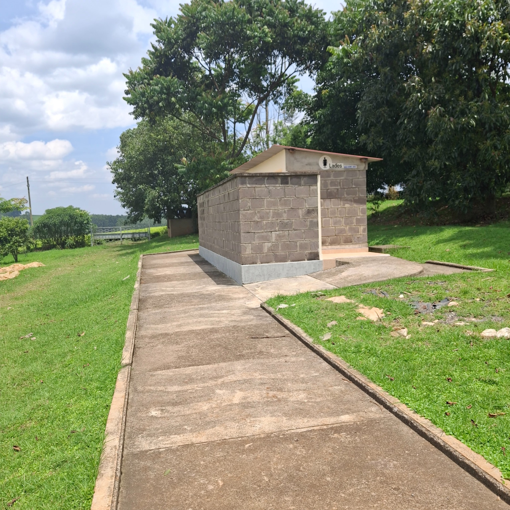
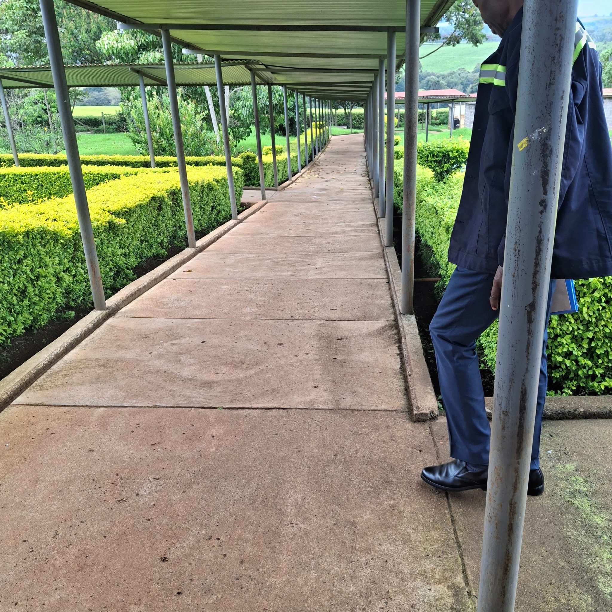
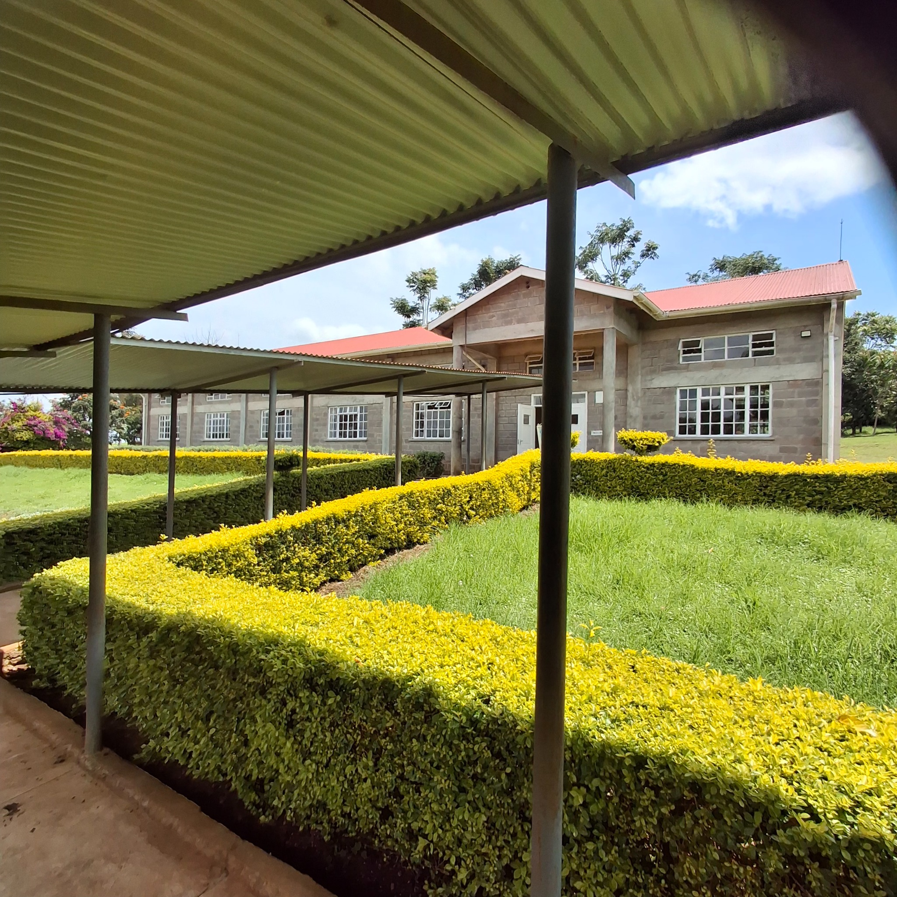

Education project
Chemasingi Secondary School
Dining Hall, Kitchen & Associated Works
A completed institutional project represented through exterior and interior views of the dining hall, kitchen facilities, staff changing rooms and paved covered walkways.






